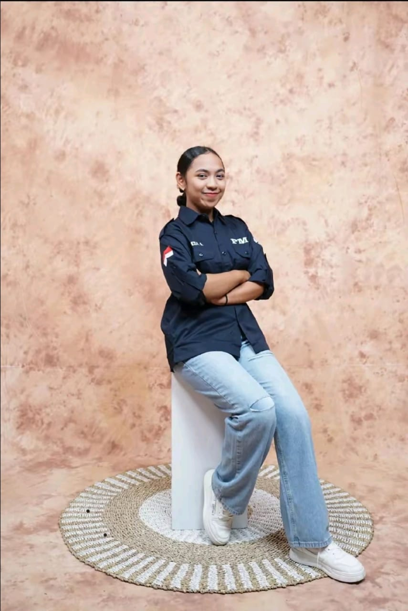

KeiManiezz
| FOTO | ||
|---|---|---|
|  | NAMA | : Kezia Aurelia W Basary |
| NIM | : 163 23 081 | |
| JURUSAN | :MANAJEMEN INFORMATIKA | |
| KELAS | : 1C | |
| KAMPUS | : POLITEKNIK NEGERI FAKFAK | |
| ASAL SMA | : SMA St Don Bosco FakFak | |
| JENIS KELAMIN | : WANITA | |
| TTL | : FakFak, 31 Januari 2006 | |
| TINGGI BADAN/BERAT BADAN | : 159cm/55kg | |
| NAMA AYAH | : Karel M Basary | |
| NAMA IBU | : Magdalena Jaflean | |
| ALAMAT | :Kamp Lusiperi, RT04 | |
| STATUS | : MAHASISWI | |
| NO HP | : 082399122811 | |
| GMAIL | : keziabasary@gmail.com |
Ini adalah halaman audio dan video.
hallo, perkenalkan nama Saya Kezia Aurelia W Basary biasa dipanggil kekez/kei sekarang saya berstatus sebagai mahasiswi aktif di Politeknik Negeri Fakfak. Hobi saya rebahan dan scroll tiktok hehehe saya orangnya sensitif dan pemarah